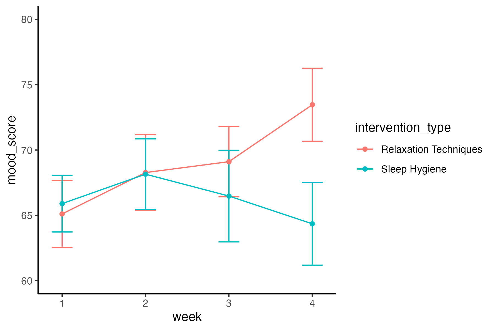

library(readr)
data_import <- read_csv("filepath/datafile.csv")Import, Merge, and Restructure Data
Class 2
The main objective of this class is to get a basic handling on importing data, merging multiple data frames, and restructuring data frames between wide and long formats.
üñ•Ô∏è Slides
Prepare
Before starting this class:
üìñ Read about the Pipe Operator
üì¶ Install readr, dplyr, tidyr, ggplot2 , Hmisc , RColorBrewer
Import
R needs to know the full file path to the file on your computer in order to import it - this is what is referred to as an absolute file path. Absolute file paths start at the root directory of your computer and might look something like:
On Macs:
Users/username/projects/project_name/a_file.csv
On Windows:
C:\username\projects\project_name\a_file.csv
What if you don’t know the full absolute file path to your data?
I want to point out three approaches to specifying file paths in R:
- Use
setwd() - Use the RStudio Import Dataset GUI
- Use RProjects and
here()
Never… ever… ever… use option 1, setwd().
Instead, you should use RProjects and here(). But we will not cover this until Class 5. For now, we can just use the RStudio Import Dataset GUI to find the absolute file path.
RStudio GUI
When you are having difficulty importing a file correctly or unsure of the file format the RStudio Import Dataset GUI can be really useful.
In the Environment window click on “Import Dataset”. You will see several options available, these options all rely on different packages. For now, select the From Text (readr)… option.
You will see a data import window open up that looks like this
Select Browse on the top right and select the data file you want to import.
The Data Preview window will let you see if it is importing it in the right format. You can change the Import Options below.
Click on the üìã icon above the Code Preview window to copy the code.
Click on Cancel to exit out of the Import GUI window
Paste the code into your Untitled.R script
- The most useful thing here will be the absolute file path.
Exploring Your Data
When you want to just explore some data and don’t care about creating a reproducible script it can be perfectly acceptable to not copy and paste the code from Code Preview window and just select the Import button.
CSV Files
csv files are by far the easiest files to import into R and most software programs. For this reason, I suggest any time you want to save/output a data file to your computer, do it in csv format.
CSV stands for “Comma-Separated Values.” It’s a simple file format used to store data in a table. Each line in the file is a row of the table, and commas are used to separate columns. Think of it like a spreadsheet where each piece of information is lined up in rows and columns, but instead of seeing the grid like in Excel, each row is just a line of text with commas between the values that would go into different columns.
csv files are typically saved with .csv file extension (e.g., data file.csv)
To import a csv file you can use read_csv() from the readr package.
Tab-Delimited Files
tab-delimited files are a little more tedious to import just because they require specifying more arguments. Which means you have to memorize more to import tab-delimited files.
Tab-delimited files use tabs between items in a row to separate columns. In general, the delimiter is the type of value that is used between items in a row to separate columns. There are a lot of different types of delimiters with tab and comma (csv) being the most common.
Tab-delimited files are typically saved with the more standard .txt file extension (e.g., data file.txt) but a lot of other file formats might also have the .txt extension. This can create some ambiguity as to how the data is stored and formatted for .txt files.
To import a tab-delimited file you can use read_delim() from the readr package.
data_import <- read_delim("filepath/datafile.txt", delim = "\t",
escape_double = FALSE, trim_ws = TRUE)There are three additional arguments we have to specify: delim, escape_double, and trim_ws. The notation for tab-delimted files is "\t". I always forget how to specify each of these arguments so I frequently use the RStudio Import Dataset GUI to copy the code needed to import a tab-delimited file.
Merge
You might find yourself in a situation where you need to import multiple data files and merge them into a single data frame. There are two general classes of merging data
Bind
Join
Bind
In R, a “bind” is combining data frames together by stacking either the rows or columns.
A row “bind” takes data frames that have the same columns but different rows and stacks them on top of each other. This will happen if you have separate data files for each subject from the same task. Each subject data file will have their unique rows but all subjects will have the same columns.
A column “bind” takes data frames that have the same rows but different columns and stacks them side-by-side. This is a much less common situation than a row bind and can usually be accomplished with a join instead.
Row and column binds can be performed with bind_rows() and bind_cols() from the dplyr package
library(dplyr)
data_merged <- bind_rows(data_1, data_2)
data_merged <- bind_cols(data_1, data_2)Join
In R, a “join” is merging data frames together that have at least one column in common with a mix of shared and unique entries in that column (e.g. Subject IDs).
There are lots of different kinds of joins, some of which are:

For a full list and detailed description of the _join() functions see the dplyr documentation
But for the most part you can get away with just knowing how to do a full join using full_join() from the dplyr package.
data_merged <- full_join(data_1, data_2, by = "Subject")Whenever joining, you need to specify what are the key column(s) to join by - columns that are common between the data frames. Often times there is more than one key column that the data frames need to be joined by:
data_merged <- full_join(data_1, data_2, by = c("Subject", "Session"))Restructure
The exact same data can be structured in different ways. There are two main formats that any data set can be structured as:
Wide: Variables are spread out across columns, making the data frame wider
| Participant ID | Stress Level Score | Creativity Score | Memory Score |
|---|---|---|---|
| 1 | 5 | 7 | 8 |
| 2 | 3 | 6 | 7 |
| 3 | 4 | 8 | 6 |
Long: Variables and values are spread across rows, making the data frame longer
| Participant ID | Test Type | Score |
|---|---|---|
| 1 | Stress Level | 5 |
| 1 | Creativity | 7 |
| 1 | Memory | 8 |
| 2 | Stress Level | 3 |
| 2 | Creativity | 6 |
| 2 | Memory | 7 |
| 3 | Stress Level | 4 |
| 3 | Creativity | 8 |
| 3 | Memory | 6 |
And actually, you can have a mix of wide and long formatted data in a single data frame.
| Participant ID | Session | Stress Level | Creativity | Memory |
|---|---|---|---|---|
| 1 | 1 | 5 | 7 | 8 |
| 1 | 2 | 4 | 8 | 9 |
| 1 | 3 | 3 | 9 | 10 |
| 2 | 1 | 6 | 6 | 7 |
| 2 | 2 | 5 | 7 | 8 |
| 2 | 3 | 4 | 8 | 9 |
| 3 | 1 | 4 | 8 | 6 |
| 3 | 2 | 3 | 9 | 7 |
| 3 | 3 | 2 | 10 | 8 |
Session is in long format with values stacked in rows. Stress, creativity, and memory are all in wide format.
A good rule of thumb for formatting data is to have your variables (IVs and DVs) each have their own column.
Notice that this is not the case in the long formatted data above.
Test TypeandScoreare not variables in this study. RatherStress,Creativity, andMemoryare. Therefore, it makes more sense to have that data in a wide format.This often results in:
Measured variables in wide format
Experimental conditions or repeated-measures in long format
Notice how
Session, a within-subject variable, is in long format becauseSessionis an independent variable in the study, soSessionneeds it’s own column.Stress,Creativity, andMemoryare other variables (probably dependent variables) in this study and so they need their own columns, therefore they are laid out in a wide format.
Restructuring data involves changing the structure from long-to-wide (wider) or wide-to-long (longer). The tidyr package provides useful functions to do this:
pivot_wider()“widens” data from long-to-widepivot_longer()“lengthens” data from wide-to-long
The tidyr package, like readr and dplyr, is from the tidyverse set of packages.
Pivot Wider
Using the example data sets above, let’s restructure the long data frame to a wide format:
First let’s create the data frame - you can just copy and paste this code
data_long <- data.frame(
ParticipantID = rep(1:3, each = 3),
TestType = rep(c("Stress Level", "Creativity", "Memory"), times = 3),
Score = c(5, 7, 8, 3, 6, 7, 4, 8, 6)
)The two main arguments to specify in pivot_wider() are
names_from: The column name that contains the variables to create new columns by (e.g. “Test Type”). The values in this column will become Column names in the wider data format.
values_from: The column name that contains the values (e.g. “Score”).
Now we can use pivot_wider() to convert it to a wide format:
library(tidyr)
data_wide <- data_long |>
pivot_wider(names_from = TestType,
values_from = Score)
Column Names
R does not like column names to have spaces in them, but it does allow it.
Notice how in data_wide the column Stress Level contains a space. This is because the value in data_long had a space, which was not a problem then.
clean_names() from the janitor package provides a convenient way to get rid of spaces and replace them with an _
library(janitor)
data_wide_clean <- clean_names(data_wide, case = "parse")Pivot Longer
The three main arguments to specify in pivot_longer() are:
cols: The column names that will be restructured to a longer format
names_to: The new column name that will contain values which correspond to the column names in the wide data
values_to: The new column name that will contain the actual values in the wide data
Using pivot_longer() we can restructure the data back to long format
data_long_again <- data_wide |>
pivot_longer(cols = any_of(c("Stress Level", "Creativity", "Memory")),
names_to = "TestType",
values_to = "Score")Check to make sure data_long and data_long_again are identical.
Okay, now let’s say we have a wide data set with multiple sessions of Stress , Creativity, and Memory.
data_sessions_wide <- tibble(
ParticipantID = 1:3,
StressLevel_S1 = c(5, 6, 4),
Creativity_S1 = c(7, 6, 8),
Memory_S1 = c(8, 7, 6),
StressLevel_S2 = c(4, 5, 3),
Creativity_S2 = c(8, 7, 9),
Memory_S2 = c(9, 8, 7),
StressLevel_S3 = c(3, 4, 2),
Creativity_S3 = c(9, 8, 10),
Memory_S3 = c(10, 9, 8)
)The data is not very useful in this format, so let’s restructure it to be a mix of long and wide format. Using the rule of thumb above, we want to create 4 columns with Session, Stress Level, Creativity, and Memory. There are two strategies for doing this:
- Using
pivot_longer(),separate(), and thenpivot_wider() - Use more complicated syntax in
pivot_longer()
# 1. Using pivot_longer(), separate(), and then pivot_wider()
data_sessions_1 <- data_sessions_wide |>
pivot_longer(cols = contains("_S"),
names_to = "Session",
values_to = "Score") |>
separate(Session, into = c("Test", "Session")) |>
pivot_wider(names_from = Test,
values_from = Score)
# 2. Use more complicated syntax in pivot_longer()
data_sessions_2 <- data_sessions_wide |>
pivot_longer(cols = contains("_S"),
names_to = c(".value", "Session"),
names_pattern = "(.*)_(S\\d)")You may find yourself in a situation where you need to select multiple columns in a argument but it can be tedious to type each every column, especially if the number of columns is larger.
There are what is known as tidy select functions to easily select column names, particularly if there is a consistent pattern to those column names.
This can be very useful in functions like pivot_longer(). In the examples provided on above, we used some tidy select functions: any_of() and contains().
To learn more about what tidy select functions are available and what they do read the tidy select documentation.
Learning Activity
Let’s consider a hypothetical study investigating the impact of sleep quality interventions on cognitive performance and mood across several weeks. In this scenario, participants are exposed to two interventions (Sleep Hygiene Education and Relaxation Techniques) and their cognitive performance scores and mood ratings are recorded weekly.
You’re analyzing data from a hypothetical psychology experiment where participant’s cognitive performance scores and mood ratings are recorded across four weeks for two interventions. The data is split into two files, one with the cognitive performance data (class_2_cog_data.csv) and another with the mood ratings data (class_2_mood_data.txt), but the same participants across each data set.
Your task will be to import, restructure, and merge the data so that we can graphically visualize the results of the experiment.
Setup and Import
Download the data files:
⬇️ class_2_cog_data.csv
⬇️ class_2_mood_data.txt
Create a new R script and save it as class2_activity.R
Load the following packages at the top of your script
readr,dplyr,tidyr,ggplot2
Import the data files
Get to know the data (use what you learned from Class1)
What are the column names?
What type of values are in the columns?
How many participants are in the study?
How many are in each of the intervention conditions?
Approximately, what are the range of values on cognitive performance and mood ratings?
- Hint: You can click on the columns names when viewing the data frame to toggle between sorting from low-to-high and high-to-low
Are there are any missing values in the data?
Restructure
Restructure each data set to long format with
weekspread across rows instead of columns and one column forcognitive scoreormood ratingThe data frames should look something like
participant_id intervention_type week cognitive_score 1 Sleep Hygiene 1 76.09 1 Sleep Hygiene 2 75.34 1 Sleep Hygiene 3 75.09 1 Sleep Hygiene 4 78.85 2 Sleep Hygiene 1 72.30 participant_id intervention_type week mood_score 1 Sleep Hygiene 1 66.32 1 Sleep Hygiene 2 83.44 1 Sleep Hygiene 3 76.29 1 Sleep Hygiene 4 79.14 2 Sleep Hygiene 1 60.17 After you have restructured the data frames, you will notice that the values in the
weekcolumn also contain the string:cognitive_week_ormood_week_. This is redundant information with the column names and can be removed to clean up the format of the data. The following line of code can be used to to do so.mutate(week = parse_number(week)) # e.g., you can pipe the result of pivot_longer() to this mutate() code data_long <- data |> pivot_longer() |> mutate(week = parse_number(week))
Merge
Merge the two long data frames into one data frame.
- Hint: There is more than one key column that the data frames need to be joined by.
Plot
Plot the cognitive performance data:
Create a plot showing the cognitive scores (y-axis) across weeks (x-axis) by intervention type (color). Something like this:
First add the data and aesthetic layers - how the data map onto the plot scales and axes
Tipdata should be changed to the name of your data frame containing the cognitive data
var_x should be changed to the name of the column that should be plotted on the x-axis
var_y should be changed to the name of the column that should be plotted on the y-axis
var_color should be change to the name of the column containing the intervention type
# change the following values to fit your data # data, var_x, var_y, var_color ggplot(data, aes(x = var_x, y = var_y, color = var_color, group = var_color))Now let’s add in the geometries layer - the visual elements used for the data
ggplot(data, aes(x = var_x, y = var_y, color = var_color, group = var_color)) stat_summary(fun.data = mean_cl_normal, geom = "errorbar", width = .9) + stat_summary(fun = mean, geom = "line", size = .5) + stat_summary(fun = mean, geom = "point", size = 1.5)No need to modify the code here. For now don’t worry about what these are doing, we will cover graphical visualization in more detail in later chapters. But you can see that we are plotting three
geomlayers, errorbar, line, and point. We need to usestat_summary()because the data are not aggregated, this function will aggregate the data across participants usingfun = mean.Finally, let’s make this plot a little prettier
# change the following values based on your preference # the width, and size values in stat_summary() # lower limit and upper limit in coord_cartesian() # the title, x, y, and color in labs() # choose a ggplot2 theme ggplot(data, aes(x = var_x, y = var_y, color = var_color, group = var_color)) + stat_summary(fun.data = mean_cl_normal, geom = "errorbar", width = .9) + stat_summary(fun = mean, geom = "line", size = .5) + stat_summary(fun = mean, geom = "point", size = 1.5) + coord_cartesian(ylim = c(72, 80)) + labs(title = "Give the plot a title", x = "change x-axis label", y = "change y-axis label", color = "change legend title") + scale_color_brewer(palette = "Set1") + theme_() # choose a ggplot2 themeChange the following values based on your preference
the width of the error bars:
stat_summary(width = .9)the size of the lines:
stat_summary(size = .5)the size of the data points:
stat_summary(size = .1.5)the lower and upper limit of the y-axis (zoom in or out):
coord_cartesian(ylim = c(lower_limit, upper_limit)add a plot title
the y-axis, x-axis, and legend labels. e.g., no underscores, capitalize words, etc.
choose a brewer color palette:
scale_color_brewer(palette = "Set1")- See options here: R Color Brewer’s palettes
choose a ggplot2 theme:
theme_bw()theme_light()theme_dark()theme_minimal()theme_classic()theme_void()
Plot the mood data:

Copy and paste the code you wrote for plotting the cognitive performance data.
Change values as needed
The variable to be plotted on the y-axis
aes(y = )the lower and upper limits of the y-axis
coord_cartesian(ylim = c(lower_limit, upper_limit)plot title, y-axis, x-axis, and legend labels
Save the plots as a file on your computer
Place the following code directly below the code for creating each of the plots. It will save the last generated plot to a file. Change the file name for each plot.
ggsave("folder/path/class_2_cognitive_plot.png", width = 6, height = 4, dpi = 300)
Organize and Clean Up
Organize and clean up your script
- Load all packages at the top of your script
- Get rid of code that is not necessary, such as:
install.package()callsView()
- Add comment headers to sections of your code: e.g.,
# load packages
Check Your Work
You should attempt to complete the activity without looking at this code
Show Code
# load packages
library(readr)
library(dplyr)
library(tidyr)
library(ggplot2)
# import data
cog_import <- read_csv("data/class_2_cog_data.csv")
mood_import <- read_delim("data/class_2_mood_data.txt",
delim = "\t", escape_double = FALSE, trim_ws = TRUE)
# restructure data
cog_data <- cog_import |>
pivot_longer(cols = starts_with("cognitive_week"),
names_to = "week",
values_to = "cognitive_score") |>
mutate(week = parse_number(week))
mood_data <- mood_import |>
pivot_longer(cols = starts_with("mood_week"),
names_to = "week",
values_to = "mood_score") |>
mutate(week = parse_number(week))
# merge data
data_merged <- full_join(cog_data, mood_data,
by = c("participant_id", "intervention_type", "week"))
# plot data
ggplot(data_merged, aes(x = week, y = cognitive_score,
color = intervention_type, group = intervention_type)) +
stat_summary(fun.data = mean_cl_normal, geom = "errorbar", width = .25) +
stat_summary(fun = mean, geom = "line", size = 1) +
stat_summary(fun = mean, geom = "point", size = 2) +
coord_cartesian(ylim = c(65, 85)) +
labs(title = "Cognitive Scores Across Weeks by Intervention Type",
x = "Week",
y = "Cognitive Score",
color = "Intervention Type") +
scale_color_brewer(palette = "Set1") +
theme_classic()
ggsave("images/class_2_cognitive_plot.png",
width = 6, height = 4, dpi = 300)
ggplot(data_merged, aes(x = week, y = mood_score,
color = intervention_type, group = intervention_type)) +
stat_summary(fun.data = mean_cl_normal, geom = "errorbar", width = .25) +
stat_summary(fun = mean, geom = "line", size = 1) +
stat_summary(fun = mean, geom = "point", size = 2) +
coord_cartesian(ylim = c(60, 80)) +
labs(title = "Mood Across Weeks by Intervention Type",
x = "Week",
y = "Mood",
color = "Intervention Type") +
scale_color_brewer(palette = "Set1") +
theme_classic()
ggsave("images/class_2_mood_plot.png",
width = 6, height = 4, dpi = 300)